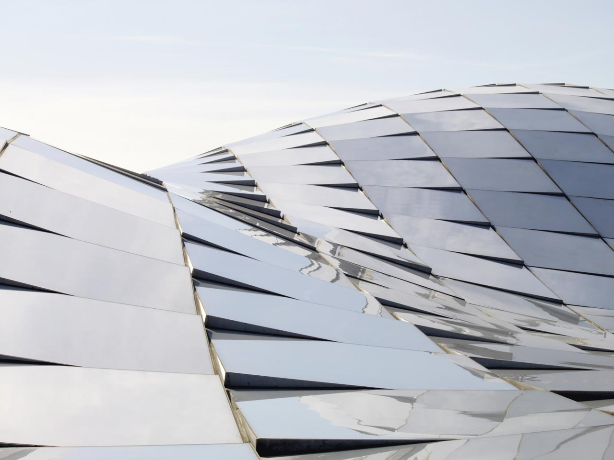
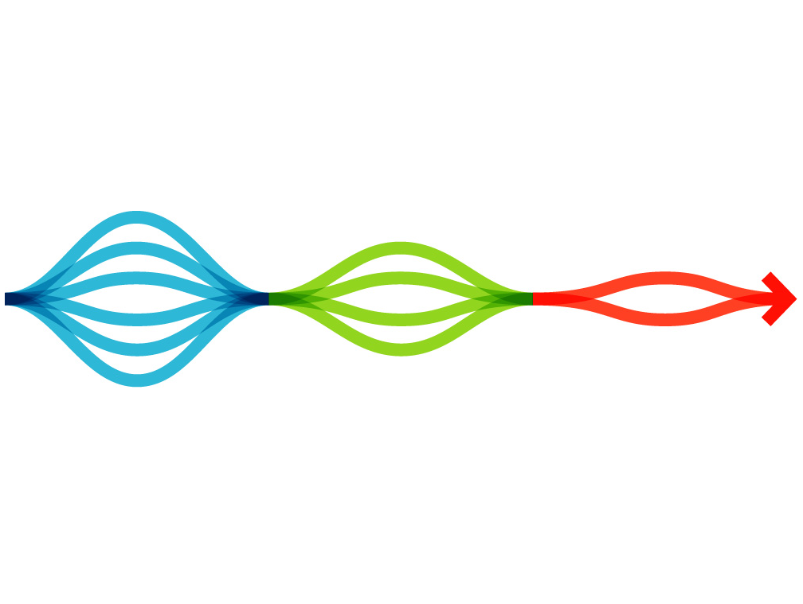

由设计驱动的商业创新
高上(Glocal)善于把设计思维和战略结合在一起，创造出全新的整合的解决方案，从而实现商业模式的创新和品牌形象的有机更新。战略和设计的结合是一种以人为本的创新方式，它可以帮助企业转变产品、服务、流程和战略的开发方式。我们综合考虑了人类需求、可行的技术以及盈利的商业模式。我们可以帮助未经过专业设计培训的人，运用创意工具来解决不同类型的问题和挑战。

发现：将调查转化为洞察
通过调研、市场分析和战略评估，我们深入洞察客户的目标用户、竞争对手、品牌特性和关键市场机会。
策略：将洞察转化为策略
根据洞察，我们利用丰富的财务和资本市场资源，以及技术能力为客户建立全面的策略。
设计：将策略转化为形态
我们生成一系列的设计方法和概念，为客户面对的挑战提供更为全面彻底的解决方案。所有概念在经过不断的审查、试验、改进后最终成为设计和开发的方向。
基于数据的战略和设计
地理信息系统(GIS)是大数据在空间上的应用。依靠数据分析，数据图形化，以及编程，高上(Glocal)把数据有机结合到决策，政策制定，以及设计过程当中。 通过数据，我们把金融，工程，法规，设计等不同平台联系在一起，促成城市积极和有效的变化。
杨晓雯